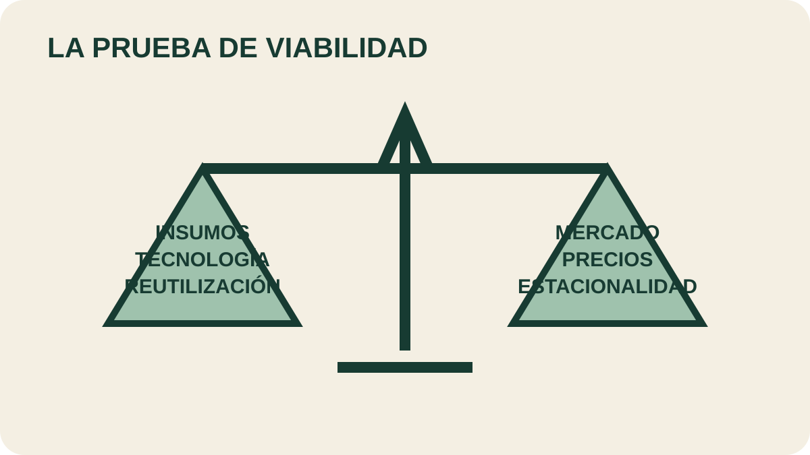

Módulo 30 · 25 minutos
Ventajas y límites de la agroindustria esenciera
Al terminar, vas a poder evaluar un emprendimiento esenciero según sus condiciones reales, no solo por el valor del producto final.
Una industria liviana y exigente al mismo tiempo
Necesita planta, agua y combustible. Puede reutilizar material agotado, trabajar con tecnología conocida y generar poco residuo. Pero enfrenta compradores específicos, precios inestables y equipos sobredimensionados que pueden quedar detenidos gran parte del año. La viabilidad vive en esa tensión.
Las ventajas que están dentro del proceso
Además de la planta, los insumos principales son agua y combustible. El material vegetal ya extraído puede contribuir como combustible alternativo. Esto simplifica el manejo y reduce costos.
La destilación por arrastre de vapor continúa siendo la tecnología más difundida: económica, conocida desde hace más de tres siglos y exitosa en muchos casos. La necesidad de mano de obra es reducida y no siempre exige alta calificación operativa.
El material agotado puede reutilizarse como combustible, alimento para ganado o abono. Esa circulación disminuye desechos y abre otra cuenta dentro del proceso. El puede ser el factor más importante.
Sin embargo, no está garantizado. En los primeros años un emprendimiento nuevo puede obtener una relación inversa: transformar cuesta más de lo que agrega. La ventaja debe demostrarse con números del caso concreto.
Los límites que llegan desde afuera
Los aceites esenciales son productos agroindustriales no tradicionales con mercados limitados y dificultades para acceder a información y compradores. La industria de sabores y fragancias concentra gran parte de la demanda y exige calidad, cantidad y precio definidos para cada cliente.
La disponibilidad de buen material vegetal funciona como . Esa ventaja se construyó en las Partes 2 y 3: identificación, cultivo, cosecha y poscosecha no son etapas separadas del negocio.
Los precios pueden fluctuar por fenómenos climáticos, políticos, económicos o mercadotécnicos. No todo riesgo puede eliminarse con una decisión propia.

Separá control de contexto
Ubicá de un lado insumos, tecnología y reutilización; del otro, mercado, precio y estacionalidad. ¿Qué aspectos puede mejorar el emprendimiento y cuáles debe vigilar aunque no los controle?
Mucha capacidad para pocas semanas
La obliga a dimensionar con cuidado. Diversificar cultivos o contar con puede reducir la inactividad.
Los aspectos legales dependen de cada país; la explotación de destiladores puede estar controlada y su uso sujeto a impuestos. Un presupuesto sin ese marco queda incompleto.
Finalmente aparece el riesgo ético: priorizar valor mercantil sobre costo social o ecológico, especialmente cuando la planta se recolecta de poblaciones silvestres. Una operación rentable que agota su materia prima destruye su propia base y el entorno del que depende.
Actividad · La prueba de realidad
Evaluá este caso: una parcela con una sola especie, cosecha concentrada en tres semanas, alambique propio y comprador todavía no contactado. Anotá tres ventajas, cuatro riesgos y una decisión que reduciría la capacidad ociosa. Cerrá con el dato que pedirías al posible comprador.
La viabilidad necesita un destinatario
Ya sabemos qué puede favorecer o limitar la producción. Falta decidir para quién se produce, qué nicho admite la escala y qué responsabilidad se asume al convertir una riqueza vegetal en materia prima.
Guardá esta estación
Cuando puedas explicar la idea central con tus propias palabras, marcá el módulo como completado.